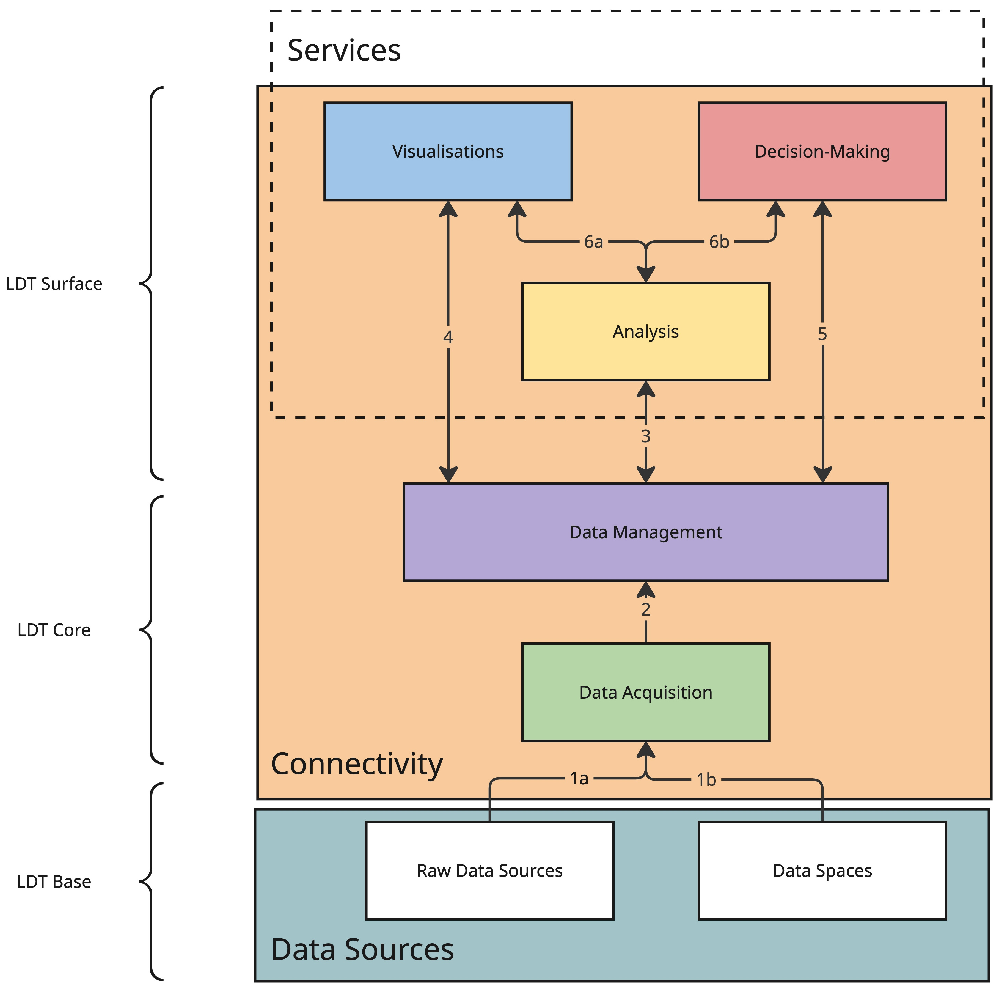
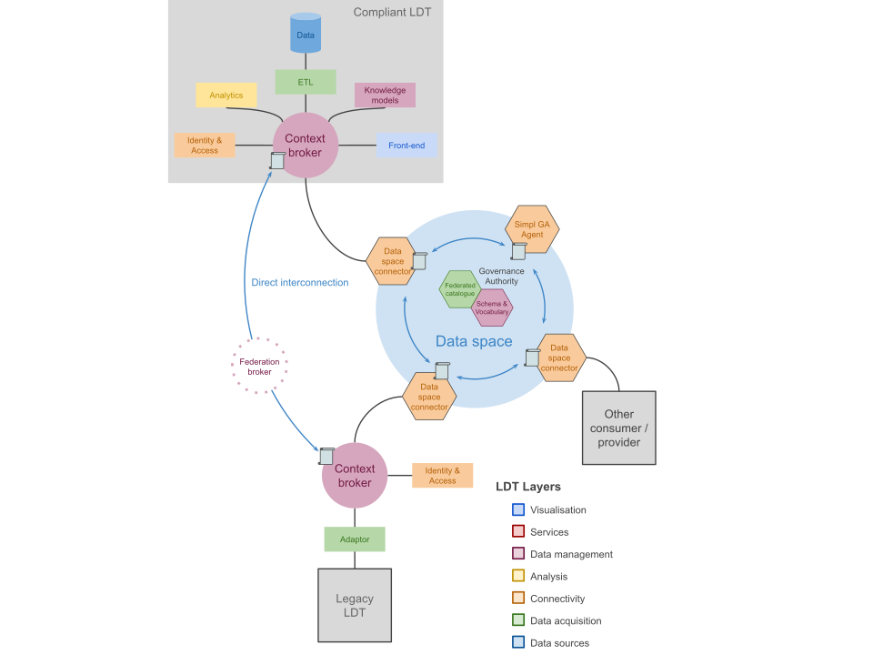
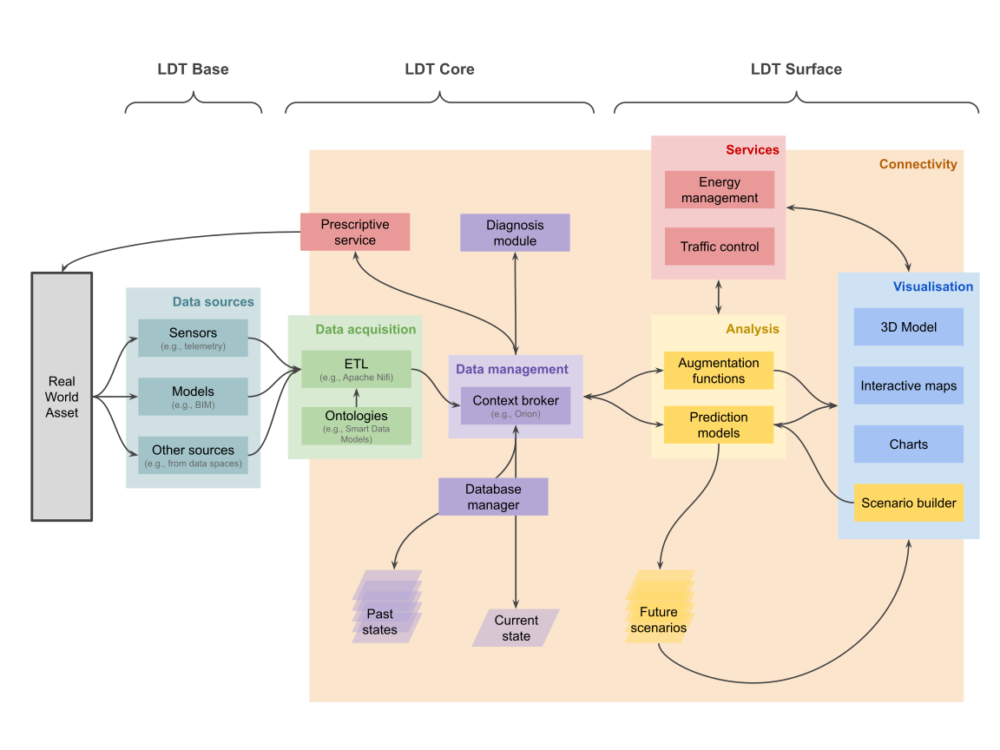
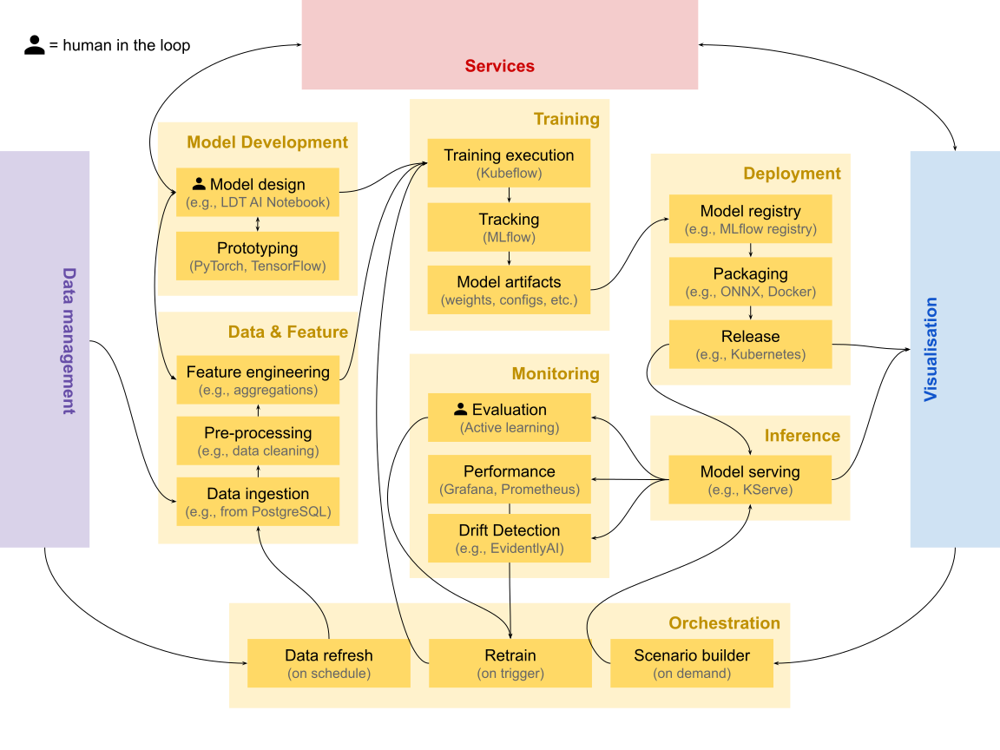

Implementation Guidance
The open calls are closed and pilots are moving from being selected to building. This page is the entry point for that phase: it brings the methodology, the technical resources, and the LDT Interoperability Blueprint into a single route from a use case on paper to a working, interoperable Local Digital Twin.
Where the Resources section is a library — a catalogue of standards, tools and frameworks to draw from — this page is the assembly instructions: which pieces to pick up, in what order, and how they fit together for each work strand.
Start here
Three questions place you on the right path. They map to the three work strands, but they are questions about what you are building, not about which call you applied to.
-
I have LDTs. I need them to talk to each other.
You are working at the Base and Core levels: exposing what already exists through standard interfaces, and connecting it to other twins — directly, through a federation broker, or through a data space.
-
We need a twin that does not exist yet.
You are building the Core: shared data acquisition, context management and analytics that several municipalities specify once and each instantiate locally, keeping sovereignty over their own data.
-
The twin works. It should now predict, explain or advise.
You are working at the Surface: AI services, simulation and immersive interfaces that consume an existing LDT and publish results back into it.
The strands are cumulative, not exclusive
Interconnection, deployment and AI services stack on one another. A WS3 pilot still needs the Core a WS2 pilot builds; a WS2 pilot that wants to federate later will thank itself for following the WS1 interoperability choices from day one. Read across the tabs below rather than only your own.
How the pieces fit together
Pilots have four bodies of support. They are not alternatives — each answers a different question, and they are designed to be used together throughout the pilot's life. Three are LDT4SSC's own; the fourth, the EU LDT Toolbox, is the wider European ecosystem this project feeds into and draws from.
-
The Methodology
How do we organise ourselves?
Four phases — EXPLORE → VALIDATE → DEFINE → IMPLEMENT — and 15 self-contained workshops covering use-case definition, data governance, interoperability, business modelling and stakeholder onboarding.
-
The Technical Resources
What do we build it with?
A filterable library of standards, protocols, frameworks and tools, classified by LDT layer, MIMs Plus, category and scope — plus the ISAQ self-assessment.
-
The Interoperability Blueprint
How should it be put together so it connects?
LDT building blocks, workflows, and reference architectures that make components reusable and twins interconnectable.
-
The EU LDT Toolbox
What already exists that we can reuse — and where does our work go?
The European catalogue of LDT tools, services and best practices. Check it before building, and publish back to its Marketplace after.
The Blueprint is being written with pilots, not handed to them
The LDT Interoperability Blueprint is a living, work-in-progress document, co-created with the pilots. It is deliberately not finished: the building blocks, workflows and reference architectures in it are refined as pilots hit real obstacles and report back what worked.
What this means for you, concretely:
- Treat it as guidance, not as a specification to certify against. Where it is silent or underspecified, make a reasoned choice and document it.
- Your implementation decisions are inputs. Gap analyses, workarounds, and "we tried X and it failed because Y" are exactly what the next revision needs.
- Report back through the Pilot Journey and through your pilot deliverables. Those updates feed the Blueprint, the Asset Repository, and ultimately the EU LDT Toolbox.
Finding your way around the Blueprint
The Blueprint is a single long specification. These are the entry points most relevant while implementing — each links straight to the relevant section.
| If you are… | Go to |
|---|---|
| Getting oriented | High-level overview of an LDT |
| Choosing what to build | LDT building blocks — business & organisational · technical |
| Designing the architecture | Reference architectures · technical architecture |
| Adding a component to an existing twin | Workflow: adding new Surface-level components |
| Making components discoverable | Workflow: discovering compatible components |
| Picking standards | Standards and protocols — NGSI-LD · RDF |
| Checking MIMs alignment | Alignment with MIMs Plus |
| Connecting to a data space | Relationship between data spaces and LDTs |
Blueprint guidance per LDT layer
The Blueprint's How to build an LDT section is organised by the same layers used throughout this page and in the resource library — so once you know which layer you are working on, you can go straight to its guidance:
Data acquisition · Data management · Connectivity · Analysis · Decision-making · Visualisations
It also splits guidance by methodology phase: Explore & Validate · Define & Implement.
Coming to the Blueprint: maturity plateaus
A recurring question from pilots is "where are we, and what is the next realistic step?" A maturity plateaus assessment — successive plateaus a twin moves through, with the capabilities and interoperability features that define each — is planned for the Blueprint and is not yet published.
Until then, use the ISAQ for a point-in-time interoperability score, and the five capabilities below to describe how far your twin has matured.
What you are building
Before choosing tools, it helps to agree on what an LDT is in this project, and on the vocabulary used throughout the architectures and workflows below.
Working definition
A Local (or Urban) Digital Twin is a digital representation of physical assets, systems or processes in a defined local context (city, district, building, industry, port, airport). LDTs are based on structured data models and contextualised data. They leverage historical, near real-time or real-time data, and they enable visualisation, analysis, simulation and reasoning services that support decision-making.
This is a working reference, intended to converge with the definition in MIM8 – Local Digital Twins. Cities already running mature twins on different architectures are not out of scope by default.
Three levels
Components are organised into three levels that follow the data's path from the territory to the people using it. Knowing which level you are working at tells you which architecture and which workflow apply to you.

Source: LDT Interoperability Blueprint — high-level overview of an LDT.
| Level | Layers | Primary work strand |
|---|---|---|
| LDT Base | Data sources — raw sources and data spaces | WS1 |
| LDT Core | Data acquisition · Data management, within Connectivity | WS2 |
| LDT Surface | Analysis · Visualisations · Decision-making, exposed as Services | WS3 |
The layer names above are the same ones used to classify every entry in the Technical Resource Library, so you can filter the library by the layer you are currently working on.
The Base/Core boundary is fluid in an interconnection
When two LDTs interconnect, the Core of one twin may act as the Base of another. This is why WS1 pilots should read the WS2 Core guidance too: what you expose becomes someone else's foundation.
Five capabilities
Capability is the honest way to describe how far a twin has matured. Most pilots start descriptive and add capabilities incrementally — you are not expected to reach prescriptive.
-
1 · Descriptive
Current and past states of the real-world asset, static and dynamic. Augmentation functions pull stored data into live services and visualisations.
-
2 · Predictive
Extends the descriptive twin with predictions of how the asset could evolve, using predictive models to envision future scenarios.
-
3 · Prospective
Conducts what-if analyses, extending prediction across multiple possible futures to evaluate the consequences of an action.
-
4 · Prescriptive
Suggests — or, in extreme cases, executes — actions on the real system to reach an objective. Requires safety, accountability and governance safeguards.
-
5 · Diagnostic
Explains situations and alerts on deviations from expected conditions; evaluates what happened, especially when the real asset malfunctions.
The functional scope
Not every component is essential. The core of an LDT is a contextual and semantic data management system (typically a context broker) plus a knowledge meta-model. Everything else is additive — and two components exist specifically to let twins interconnect.
Which components are optional, and which unlock interconnection
- Essential core: contextual data management (context broker) + knowledge models.
- Additive: ETL (integration), Identity (access rights), Visualisation and BI, Data Services, Code, Data.
- Not essential to a standalone twin, but required to interconnect:
- Policy — obligations and rights of data producer and user, verified via ODRL, managed through Eclipse Dataspace Components; SIMPL enables the process.
- Catalog — standardised documentation of available data, enabling exposure and discovery of metadata.
Reference architectures
These are possibilities, not prescriptions. Pilots run many different internal implementations, including proprietary ones, and these architectures are deliberately agnostic to what sits inside an existing twin. They show how the principles, definitions and resources in this Hub combine into something buildable.
Many meta-architectures for LDTs exist and are still emerging
These reflect the current state of the art. For an up-to-date overview, refer to MIMs Plus 8 on Local Digital Twins alongside the Blueprint's own reference architectures, which go a level deeper into the technical architecture and the artefacts exchanged between components.
The question: how do two or more existing twins share data without either of them rebuilding its internals?

How it works
- Adapt before exposing. A transformation layer (adaptor) maps the legacy twin's data to interoperable standards prior to exposure, without altering the local, sovereign storage format inside the organisation.
- Expose through a broker plus a security component. The context broker is pivotal: as well as orchestrating the twin, it acts as a first compliance check. NGSI-LD brokers natively verify syntactic compliance with the NGSI-LD information model — semantic consistency, data quality and ontological alignment still need complementary governance.
- Connect directly where twins belong to the same organisation or neighbouring departments: two context brokers can intercommunicate, share a broker within one security layer, or use the NGSI-LD federation architecture (§4.3.4 of ETSI GS CIM 009), where a federation broker aggregates distant information and exposes it as if it came from a central broker, based on sharing rules registered in a Context Registry.
- Or connect via a data space, deploying a data space connector that manages security, access, contracts and policy. Using a SIMPL Governance Authority Agent is a requirement in WS1 — it defines the vocabulary and schema and maintains a compliant shared catalogue.
Key components
| Component | Role |
|---|---|
| Adaptor | Maps legacy data to interoperable standards before exposure |
| Context broker | Orchestrates entities; first check on syntactic compliance |
| Identity & access | Authentication, authorisation, token-based access control |
| Federation broker | Aggregates distant brokers, exposed as if central |
| Data space connector | Security, access, contracts and policy enforcement |
| SIMPL GA Agent | Vocabulary, schema and federated catalogue — required in WS1 |
SIMPL-Open technology stack (as currently deployed)
| Component | Technology | Capability |
|---|---|---|
| Self-Descriptions (SD) | SD (GX-Trustframework) | Metadata description |
| SD Creator | XFSC SD Tooling | Metadata description |
| Data Space Catalogue | XFSC Federated Catalogue | Data discovery |
| Signer Service | XFSC Signer | Signature |
| Connector | EDC | Data exchange |
| Infrastructure Provisioning | Crossplane | Infrastructure provisioning |
| Authentication | Keycloak | Authentication provider |
| Identity Provider | EJBCA | Identity provider |
| Authorisation | Spring Cloud Gateway | Authorisation |
What 'done' looks like
Interconnected entities share data and resources in a trustworthy, interoperable way — cataloguing, policies, configuration, identity and access management, and contracting all handled in the data space sphere. Twins act as both consumers and providers.
The question: what do we actually have to build, and in what order, to stand up a twin that does not exist yet?

How it works
- The Base captures the territory. Sensors provide telemetry, models such as BIM describe built assets, and external sources — including data spaces — supply the rest.
- The Core makes data usable. Data acquisition components (ETL pipelines, semantic alignment through ontologies like Smart Data Models) transform and validate incoming data before a context broker manages it.
- The broker is the central integration point, maintaining the current state of all entities, while past states remain reachable through temporal APIs or dedicated time-series storage.
- The Surface delivers value through Analysis (augmentation functions and prediction models generating future scenarios), Services (domain applications such as energy management or traffic control), and Visualisation (3D models, interactive maps, charts, scenario builders).
Key components
| Component | Role |
|---|---|
| Data sources | Sensors, BIM models, external and administrative sources |
| ETL | Transforms and validates incoming data |
| Ontologies | Semantic alignment (e.g. Smart Data Models) |
| Context broker | Central integration point; current state of all entities |
| Database manager | Past states for historical analysis |
| Analysis | Augmentation functions and prediction models |
| Services & Visualisation | Domain applications and user-facing interfaces |
The architecture is bidirectional
Prescriptive services and diagnosis modules feed back into the Core, enabling improvement loops where AI-driven recommendations inform decision-making, operational processes, or — where appropriate and properly governed — certain automated actions on real-world assets, in compliance with safety, accountability and governance requirements.
What 'done' looks like
Each municipality runs its own instance of a jointly specified Core, fed by its own Base-level data, retaining ownership of its data and control over configuration — while benefiting from shared development effort.
The question: how do we develop, deploy and keep alive an AI service on top of a twin?

How it works
- Data & Feature draws from the Core. It fetches historical and real-time data from the data management layer, pre-processes it (cleaning, transformation) and engineers features such as spatial joins and temporal aggregations.
- Model Development and Training. Model definitions and architectures are prototyped, then trained on distributed infrastructure with every run tracked — hyperparameters, metrics, dataset versions — producing model artifacts.
- Deployment and Inference. Validated models are registered, packaged to portable formats and released; serving endpoints handle prediction requests and publish results back to the LDT as standardised (e.g. NGSI-LD) entities.
- Monitoring closes the loop. Performance tracking and drift detection signal the Orchestration layer, which manages data refresh on schedule, retraining on trigger, and on-demand scenario building for user-driven requests.
This is not a linear pipeline
AI development is iterative and cyclical: insights from deployment inform data collection, model failures trigger re-examination of features, user feedback reshapes problem framing, and drift detection prompts recalibration. Feedback loops connect Inference back to upstream domains via monitoring and retraining.
The six domains
| Domain | What it does |
|---|---|
| Data & Feature | Ingests from the Core; cleans, transforms, engineers features; generates synthetic data when needed |
| Model Development | Model definitions — theoretical, agent-based or data-driven — plus architectures and validation strategies |
| Training | Executes training runs, tracks experiments, produces artifacts (weights, configs, metrics) |
| Deployment | Registers validated models, packages to portable formats, releases to production |
| Inference | Serving endpoints handle requests and publish results back to the LDT |
| Monitoring | Tracks performance, detects data and concept drift, triggers retraining |
Orchestration is a cross-cutting domain managing three cycles: data refresh on schedule, retrain on trigger (drift detected, or specialist evaluation via active learning), and scenario builder on demand for user-driven inference requests.
Two concerns permeate every domain
- Responsible AI — explainability, fairness assessment, uncertainty quantification — ensures services meet European trustworthiness requirements.
- Governance and Security — access control, approval workflows, data space integration via EDC and ODRL — ensures services operate within appropriate policy frameworks.
What 'done' looks like
The Analysis layer of the LDT Surface becomes the integration point between MLOps infrastructure and the wider LDT ecosystem: AI services consume current and past states from the real-world asset and publish future scenarios feeding visualisation, services and citizen-facing applications.
Implementation workflows
Three worked examples take each work strand from an existing situation to a working result — the standards and tools above, arranged into a sequence. They live on their own page because each runs to several steps.
-
WS1 · Interconnect existing LDTs
Expose a legacy twin through standard interfaces and join a data space — 4 steps.
-
WS2 · Deploy a new LDT
Specify once, instantiate locally, keep sovereignty over your own data — 9 steps.
-
WS3 · Build an AI-based service
From LDT data to a validated, published AI service — 9 steps.
Learning from real deployments
Six deployments that put these concepts into practice. They are not LDT4SSC pilots — they are prior and parallel work worth learning from, including where they fall short of the interoperability this project asks for. Each is tagged with the strand it best illustrates.
| Deployment | Work strand | Summary |
|---|---|---|
| Perugia (IT) | WS1 · WS2 | An interoperable urban platform on the FIWARE stack, with inter-municipal data governance |
| Zurich (CH) | WS2 · WS3 | A dynamic 3D twin grown from a 2011 city model into an operational planning system |
| Differdange (LU) | WS2 | EV charging balanced against renewable generation — mid-migration to open standards |
| Antibes (FR) | WS2 · WS3 | Indoor air quality across a school, surfaced through a 3D twin of the territory |
| Kiel (DE) | WS3 | Immersive heritage and ocean literacy in the SENSE CitiVerse pilot |
| Cartagena (ES) | WS3 | Real-time mobility and environmental indicators in a photorealistic 3D control room |
Expand any deployment below for the full account — the stack used, what it achieved, and where it still falls short of the interoperability this project asks for.
Perugia (IT) — an interoperable urban platform
Perugia harmonised its data using the FIWARE stack, specifically a solution called WiseTown. The project integrated the city's software infrastructure, managing large amounts of data from different sources — geographical information systems, satellite images, IoT sensors. Smart Data Models allowed semantic interoperability, while a context broker integrated the orchestration onto NGSI-LD standards.
The stack: Smart Data Models, Orion-LD as messaging and context information manager, FIWARE Keyrock for security infrastructure, and the FIWARE IDAS solution for IoT agents.
Use cases deployed: mobility and parking (real-time traffic and parking availability); environment and quality of life (air pollution, noise, public lighting); green space management; energy optimisation (public lighting scenarios, renewable integration); and citizen participation (mobile apps and crowd-planning tools for residents to report problems and monitor resolution).
Why it matters: Perugia's ability, as a medium-sized city, to mobilise interoperable infrastructure and implement inter-municipal data governance. It demonstrates that interoperability "by design", combined with shared data governance, can drive innovation for local authorities beyond the major cities.
Zurich (CH) — a dynamic 3D twin of the built environment
Facing growth to 520,000 residents by 2040, Zurich launched a dynamic 3D spatial model to support evidence-based decision-making, integrating real-time data, 3D models and analytical tools to simulate climate impacts, densification and mobility.
The twin evolved from Zurich's 3D City Model (2011, managed by the GIS department, integrated by ESRI), encompassing topography, buildings, bridges and vegetation at various levels of detail. These datasets became the base for linking cadastral, environmental and planning information under a governance framework aligned with Switzerland's Federal Act on Geoinformation (GeoIG). Data is public via the city's Geoportal, with interactive visualisation through Zurich Virtuell.
Applications: the Municipal Development Plan (current, allowed and scenario development); urban climate analysis (airflow modelling, heat mitigation); architectural competitions with AR-assisted jury assessment; and participatory initiatives such as "Minecraft Zurich", lowering barriers to political participation.
Read this one critically
Zurich shows how a data platform can mature into a full digital twin with an operational decision-support system. However, LDT4SSC envisions communities adopting an open architecture to guarantee interconnection and interoperability. Proprietary solutions such as the one adopted here would need adapting to the interoperable standards and specifications set out in this guidance.
Differdange (LU) — clean energy and mobility
Differdange pursues net-zero carbon emissions through renewable energy initiatives. LIST, with the city's experts in the CitCom.ai project, developed an LDT integrating electric vehicle infrastructure and renewable energy generation — leveraging information on charging points, buildings and solar panels, because understanding the balance between renewable production and charging-station demand is essential to the city's sustainability goals.
The implementation includes data collection and telemetry emulators, spatio-temporal and graph databases, DT cloud solutions, and interactive maps and dashboards. Analytical models both produce synthetic telemetry and predict telemetry under simulation parameters.
The interoperability journey — useful precisely because it is unfinished: the team is producing a gap analysis to assess the current implementation's interoperability. First step is adopting an NGSI-LD-compliant context broker (Stellio, Orion-LD or Scorpio). Second is adopting domain-specific ontologies from Smart Data Models — the Buildings model from Smart Cities, plus Photovoltaic Device and Photovoltaic Measurement from Smart Energy.
Notably, their effort is not to add a virtualisation layer to transform data, but to overhaul the data structure itself — a different trade-off from the WS1 workflow above.
Antibes (FR) — an indoor descriptive LDT with 3D implementation
In enclosed spaces, indoor air quality is greatly affected by CO₂, which affects comfort and health; regulations may require ventilation assessment and pollutant control measures.
Antibes Town Hall and EGM equipped teaching and living spaces at the Jean Moulin School with 30 Nexelec Carbon sensors across 14 primary classrooms, 6 nursery classrooms, 1 activity room, 2 dormitories and a large dining hall, continuously measuring CO₂, temperature and relative humidity.
Sensors connect to the Orange LoRaWAN network; data is centralised on an EGM TWIN·PICKS platform (FIWARE architecture with Stellio context broker), where the school air confinement index (ICONE) is calculated from continuous CO₂ measurement over a school week at 10-minute intervals, exclusively for periods when the room is occupied.
The city fed the ICONE index into its existing 3D representation of the territory: temporal data is retrieved directly from the NGSI-LD API by the 3D visualisation tools Terra Explorer and Cesium — a clean illustration of a Surface component consuming a standard Core interface.
Kiel (DE) — immersive heritage and ocean literacy
Kiel is a pilot in SENSE (Strengthening Cities and Enhancing Neighbourhood Sense of Belonging), creating interconnected virtual worlds mirroring real cities, using EU data infrastructure and interoperability standards to develop CitiVerse use cases.
Two scenarios: Hidden World reveals intangible history — such as pre-war architecture destroyed during WWII — through spatialised storytelling embedded in a 3D twin. SEALEVEL provides a seaward extension of the digital city, connecting curated information on marine ecosystems and water quality with the land–sea interface of the Kiel Fjord.
Technically: a frontend User Application, a Scenario Service Layer, and a Data & Knowledge Layer connected to the SENSE Data Space. A structured Narrative Tour Model orchestrates chapter progression and triggers automated fly-to actions and viewpoint framing in the 3D environment. Content is delivered via JSON-based narrative definitions binding descriptive text and archive media to georeferenced OGC POI-aligned points of interest. Parking sensor data is exposed through a FIWARE Orion Context Broker API with NGSIv2 and FIWARE Smart Data Models. A Metocean and water-quality indicator model translates hydrological observations into interpretable status summaries and historical comparisons.
Cartagena (ES) — smart mobility and urban cohesion
Also a SENSE CitiVerse pilot, Cartagena focuses on Smart Urban Mobility and Public Space, Environment and Quality of Life.
The mobility scenario integrates real-time traffic monitoring with environmental indicators, letting users visualise how individual travel choices affect collective outcomes like air quality. The second scenario extends this into an urban cohesion lens, where planners and residents explore how socio-economic indicators (age structure, employment, income) intersect with environmental stressors like noise and heat — identifying vulnerability hotspots where limited green space and high pollution overlap with low social resilience, justifying more equitable interventions.
Technically: a high-resolution 3D City Model rendered with Unreal Engine and Cesium 3D Tiles. The data layer uses a FIWARE architecture with the Orion Context Broker ingesting live streams from 13 traffic flow sensors, 25 crowd flow sensors, 26 air quality sensors and 20 parking occupancy sensors, modelled per NGSIv2 and FIWARE Smart Data Models. A graph-based street network model supports multi-criteria optimisation (Dijkstra/A* family) weighing travel time against environmental exposure and regulatory constraints.
For citizens, an interactive 3D mobility assistant compares routes on travel time, reliability, emissions and Low-Emission Zone compliance. For professionals, a virtual control-room offers what-if simulations for temporary events and before/after comparisons to evaluate mobility plans.
See LDT4SSC pilots as they build
The examples above are external references. To follow our own pilots — what they are building, the obstacles they hit and the assets they publish — see the Pilot Journey and the aggregated pilot updates.
Obligations and checkpoints
Most of this page is guidance you can adapt. This section is not — these are commitments that apply to pilots across all three work strands.
Interoperability Self-Assessment is a condition for payment
Awarded pilots across all three Work Strands must complete the Interoperability Self-Assessment Questionnaire (ISAQ) during months 1–2 of their project, and again during the second reporting period. It is a predefined Pilot Deliverable.
Achieving a score above three in the final assessment is a condition for payment. Pilots must share the completed Excel file including all sheets.
Throughout the pilot
- Engage with at least five foundational MIMs Plus — MIM0 (Accessing Data), MIM1 (Interlinking Data), MIM2 (Representing Data), MIM3 (Sharing Data), MIM6 (Securing Data) — and use a Linked Data ontology (MIM1) for semantic consistency.
- Follow the methodology phases: EXPLORE → VALIDATE → DEFINE → IMPLEMENT, with a workplan structured around pilot deliverables PD1–PD5.
- Publish open data models in open repositories under open licences.
- Justify proprietary components and provide a plan towards an open-source equivalent.
- Document continuously for this Knowledge Hub — see the Pilot Journey for how updates are published.
Sharing back
The project's openness principle is concrete and runs in both directions: you draw on the European ecosystem at the start, and components developed in your pilot return to it at the end. This is the step that makes the next pilot cheaper than yours.
Where things go
| Destination | What belongs there |
|---|---|
| EU LDT Toolbox Marketplace | Reusable tools and services other European cities can adopt |
| LDT4SSC Asset Repository | Pilot-produced components, configurations and deployment recipes |
| Smart Data Models | New or extended entity models (e.g. PredictedTrafficFlow) |
| Interoperability Blueprint | Gap analyses, obstacles hit, patterns that worked |
| Knowledge Hub | Progress updates, lessons learned, published assets |
How to package
- Package components as containers with Helm charts, API specifications and sample configuration for different city sizes.
- Include the documentation that makes reuse possible: data requirements, deployment procedures, governance arrangements and — for AI services — model cards.
- Ensure shared components are compatible with SIMPL-Open's architecture and the EU LDT Toolbox.
- Publish under an open licence; justify any proprietary component and provide a route to an open-source equivalent.
Package as you go, not at the end
Pilots that leave packaging to the final months consistently under-deliver on it. Treat the container, the API spec and the README as part of each component's definition of done — the WS2 and WS3 workflows both build this in from step 1.
Where to go next
-
Run a workshop
Fifteen self-contained workshops across the four phases.
-
Find a tool
Filter the library by layer, MIM, category or scope.
-
Governance, legal, business model
Impact assessment, cost-benefit analysis, legal and AI guidance.
-
Shape the Blueprint
Building blocks, workflows and reference architectures — co-created with pilots.
-
Reuse and publish
The European catalogue of LDT tools and services — check it before building, publish to it after.
Feedback on this page
This draft consolidates guidance that was previously spread across the technical resources, the methodology and internal deliverables — in particular the reference architectures and implementation workflows, which were not publicly available before. If something is missing, wrong, or reads as more prescriptive than it should, please flag it before publication.